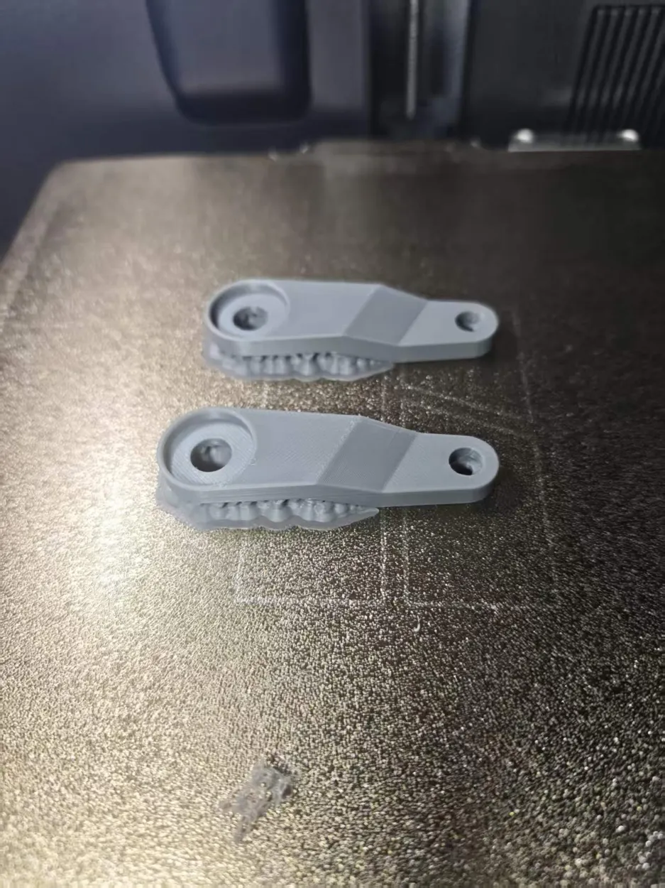
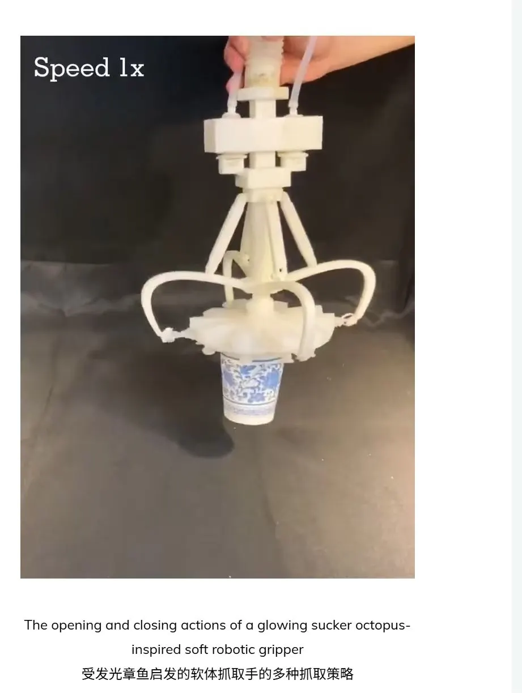
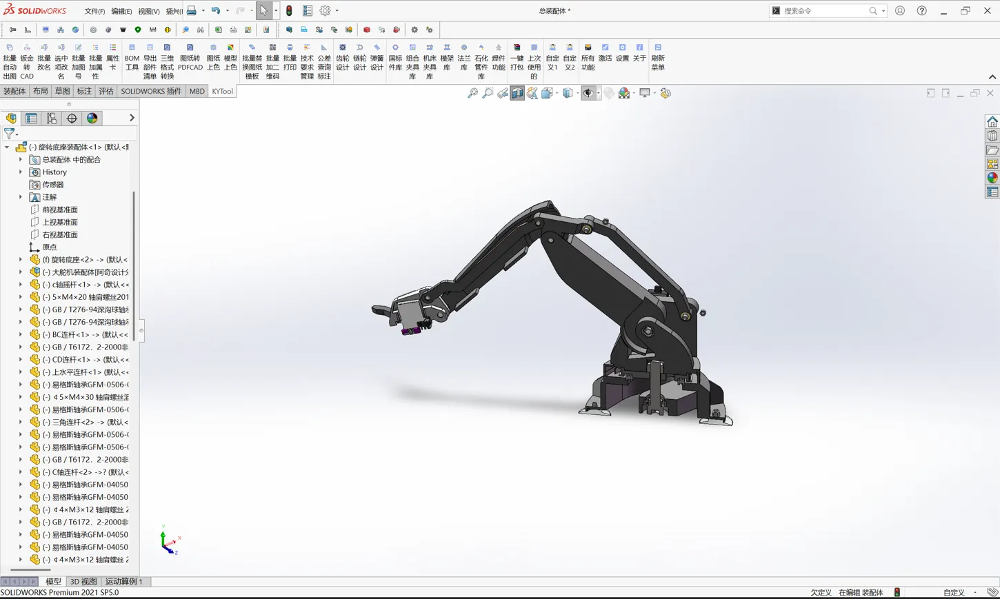
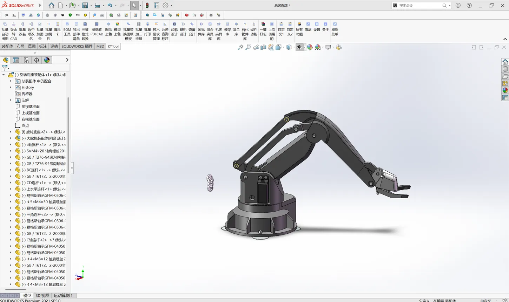
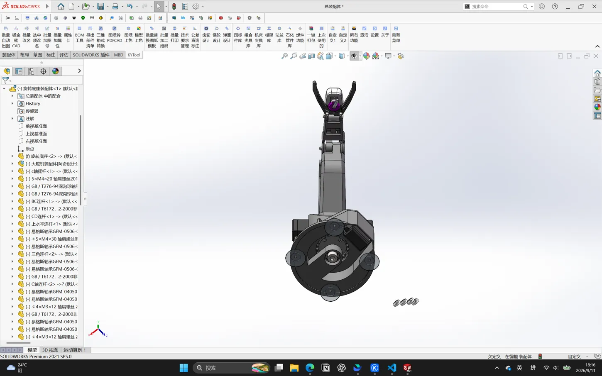

返回硬件项目索引
返回硬件项目索引机械臂（软体施工ing）
阅读项目文档 ↓一只可以操控四自由度机械臂，正在向软体进发







项目文档
暑期自学文档
暑期自学文档
这个家伙很懒，什么也没有留下（bushi）
为什么学
1了解自己是否喜欢和擅长做机械设计
2思考控制配置和电路配置，了解自己是否适合学电力电子和电路电子硬件工科
主要内容
1阿奇solidworks操作课程（main）
2阿奇solidworks机械建模课程（main）
3轴承
4电力电子课程
PN结 通过调整内电场 开关
2整流电路 以及滤波处理
3稳压电路（开关电源）
5claude code 学习（）搭建AI工作流便于写代码）
6学会控制舵机和相关代码含义
作业
能自己完成想要设计稍微美观的机械结构和嵌套结构，并擅长处理各种干涉问题和SoLidWorks bugs
能自己完成ESP32引脚查询引用和电路杜邦线连线
能自己看懂代码
你应该知道
我比较喜欢机械但是不擅长，比较擅长电路但是其实更喜欢钱
代码其实学起来比硬件轻松些，因为雷点都在bug，硬件bug更烦人，但是做出东西的成就感更强
拓展阅读（可选）
阿巴阿巴
机械臂项目介绍（软体没做完）
机械臂项目介绍（软体没做完）
项目概况
项目名称：阿巴阿巴软体机械臂（软体没做完）
mentor：鄢瑞贤
/(ㄒoㄒ)/~~没做
方案一：
方案二：
项目简介
四自由度机械臂可以完成遥控抓取物体，类似小抓娃娃机
---
项目成长
1C轴摇杆出现重大失误，磨损严重，更换
2遥控按钮和esp32之间数据无法传输到pac9685中，缺少一个库进行通讯协议转接
3C轴舵机初始位置和B轴舵机初始位置干涉，引起舵机损坏，在机械臂的嚎叫和电机的发热过载中终于调整位姿出来了
嵌入式代码
1. 总体架构 — loop() 中 6 个非阻塞任务的协作关系图（串口→按键→摇杆→逐路上电→舵机输出→健康看门狗），以及三条核心设计原则：统一角度入口 setTarget() 限幅、target/cur 双角度数组、用"限同时运动舵机数"控尖峰电流。
2. USER CONFIG 配置区 — 所有可调参数位置，含 SERVO[4] 当前标定值（大臂 65°~115° 等）。
3. 10 个功能模块（A~J）函数清单：
- A 角度安全层 · B I2C/PCA9685 驱动 · C 看门狗与掉线自动恢复（PRE_SCALE 回读、9 时钟总线抢救）
- D 启停状态机（pcaOk/outEnabled/runMode 三标志）· E 350ms 逐路上电
- F 摇杆采集/自校准/互斥仲裁（先动者先得、顶限位自动交接、归位期限 1 轴）
- G 按键消抖归位 · H 舵机输出调度（rampMask 逐轴斜坡、hold/free 松手策略）
- I 全部串口命令及对状态的影响 · J setup/loop 主流程
4. 关键全局状态速查表 — 每个状态变量的位置和含义。
5. 时序一览表 — 20ms 控制周期到 1s 看门狗的全部定时参数。
6. 安全机制汇总 — 角度限幅、电流控制、急停、总线自恢复、棕断诊断、接线自检、标定保护等 8 项
电路原理图
无pcb
直接遥控模块X2---》ESP32---》PCA9685--->舵机MG996RX3 + 舵机SG90X1
/方案2：PCB方案
机械结构
机械结构设计说明
调试与迭代过程
见项目成长
AI使用说明
出电路方案过程中使用和AI debate
嵌入式代码主要由claude code 实现
交流与心得（可选）
心得：
追风赶月莫停留